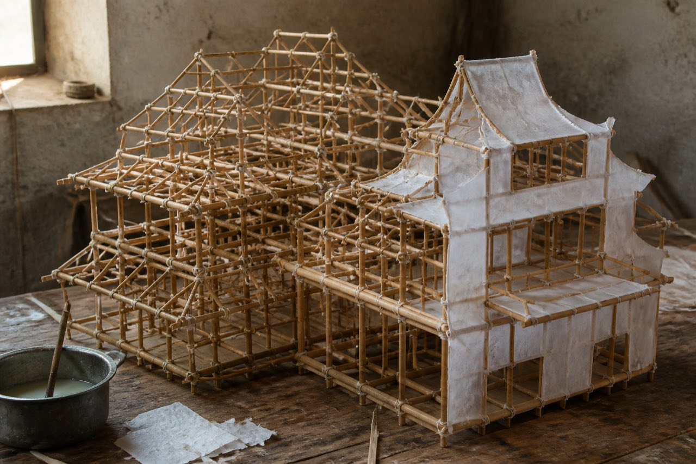

This pile under the light
Gold-foil scraps on the ground. A shoe sole mashes them and they stick. The glue-bowl skin can be peeled with a nail. Someone rushed a job this afternoon. Left this smell that has not dried through. Night shift only compares what is stacked now. It does not chase whose day-shift hand.

White-paper PaperMansion against the wall. Splint bone still showing. Beside the mansion should have been a PaperAttendant and a gold mountain. The paper face is pressed under a red-gold pile instead. A lion-head ear sticks out of funeral foil. The color is opening-day harsh red, not the dull gold of a mourning piece.
This afternoon Mai Lao said to stack the ShaoTingFuneral at the waiting-burn edge. When night shift took over, this pile of FestivalPaper was already wedged in. Who stacked first: no name on the pile. This frame can only show they are stacked together. It cannot determine whose hand pushed, and it cannot determine whether anything burned in the furnace.
The red-gold pile has thinner splint bone. The paste is storefront-lamp skin. Funeral-set bones are thick, pasted white. Two lots of goods MixedIn the same stack. If Jing Qiubai only looks at Lou Shi's blurry shot, she will think the paper attendant was moved.
Half-finished pieces sit beside it. Bamboo bone not fully pasted. Glue bowl skinned over.

After you compare the colors, open the funeral order and the invoice. The account names are not one mouth.
Open the funeral order · Open the invoice · Lou Shi's first shot